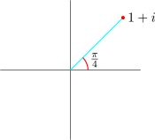

25.3 The \(n^{\text {th}}\) Root of any Complex Number
Let \(\, z = r\left (\cos \theta + i\sin \theta \right ).\,\) Then we can write \[ z = r\left [\cos \left (\theta + 2k\pi \right ) + i \sin \left ( \theta + 2k \pi \right ) \right ]\]
Because adding or subtracting multiples of the \(2\pi \) to the Principal argument it takes us to the same point we started on the complex plane.
\[ z^{1/n} = \left \{r\left [\cos \left (\theta + 2k\pi \right ) + i \sin \left ( \theta + 2k \pi \right ) \right ]\right \}^{1/n}\,, \quad k = 0, 1,2,3,\cdots \]
Then you can obtain the \(n^k\) roots of \(z\).
\[z^{1/n} = r^{1/n} \left \{ \cos \left (\frac {\theta + 2k\pi }{n}\right ) + i \sin \left (\frac {\theta + 2k\pi }{n}\right )\right \}\quad \text {where}\, k = 0,1,2,\cdots \]
In exponential form there will be \[r^{1/n}e^{i\theta /n}\, , \quad r^{1/n}e^{i\frac {\theta + 2\pi }{n}}\, ,\,\cdots \]
\[ z^{1/n} = \left \{r\left [\cos \left (\theta + 2k\pi \right ) + i \sin \left ( \theta + 2k \pi \right ) \right ]\right \}^{1/n}\]
Find the cube root of unit
\(z = \sqrt [3]{1}\quad \implies \quad z = 1 + 0 i\)
\(r = |z| = 1\)
\(\theta = 0\) (Principal argument)
\(0, \, 2\pi ,\, 4\pi , \, 6\pi ,\, 8\pi , \, \cdots \)
\begin {align*} \sqrt [3]{1} & = \left (\cos \theta + i\sin \theta \right )^{\frac {1}{3}}\\ \sqrt [3]{1} & = \left [\cos \left (\theta + 2k\pi \right ) + i \sin \left ( \theta + 2k \pi \right )\right ]^{\frac {1}{3}}\\\\ & = \cos \left (\frac {\theta + 2k\pi }{3}\right ) + i \sin \left (\frac {\theta + 2k\pi }{3}\right ) \quad , \quad k = 0, 1,2 \end {align*}
\[\sqrt [3]{1} = \cos \frac {2k\pi }{3} + i \sin \frac {2k\pi }{3} \quad , \quad \theta = 0\]
\begin {align*} \text {When}\quad k = 0, & \quad \cos 0 + i\sin 0 = 1\\\\ k = 1, & \quad \cos \left (\frac {2\pi }{3}\right ) + i\sin \left (\frac {2\pi }{3}\right ) = \left (-\frac {1}{2} + i\frac {\sqrt {3}}{2}\right )\\\\ k = 2, & \quad \cos \frac {4\pi }{3} + i\sin \frac {4\pi }{3} = \cos \left (-\frac {2\pi }{4}\right ) + i\sin \left (-\frac {2\pi }{4}\right ) =\cos \frac {2\pi }{4} - i\sin \frac {2\pi }{4} = -\frac {1}{2} - i\frac {\sqrt {3}}{2} \end {align*}
\(\therefore \quad \) The cube roots of unit are \(\, 1, \, w, \, w_2\)

Find in the form \(\,\displaystyle {re^{i\theta }}\,\) the fourth root of \(\, 1 + i\).

\(\theta = \frac {\pi }{4} \quad - \) Principal argument
\(r = \sqrt {2}\)
\begin {align*} z^{1/4} & = \left \{r \left [ \cos \left (\theta + 2k\pi \right ) + i \sin \left (\theta + 2k\pi \right )\right ]\right \}^{\frac {1}{4}}\\\\ & = \left (2^{1/2}\right )^{1/4}\left \{ \cos \left (\frac {\frac {\pi }{4} + 2k\pi }{4}\right ) + i \sin \left (\frac {\frac {\pi }{4} + 2k\pi }{4}\right )\right \}\\\\ & = 2^{1/8}\left \{ \cos \left (\frac {\pi + 8k\pi }{16}\right ) + i \sin \left (\frac {\pi + 8k\pi }{16}\right )\right \}\\ \end {align*}
\begin {align*} k = 0,& \quad 2^{1/8}\,\left \{\cos \frac {\pi }{16} + i \sin \frac {\pi }{16}\right \} = 2^{1/8}\,e^{i\pi / 16}\\\\ k = 1,& \quad 2^{1/8}\,\left \{\cos \frac {9\pi }{16} + i \sin \frac {9\pi }{16}\right \} = 2^{1/8}\,e^{i 9\pi / 16}\\\\ k = 2,& \quad 2^{1/8}\,\left \{\cos \frac {17\pi }{16} + i \sin \frac {17\pi }{16}\right \} = 2^{1/8}\,e^{i 17\pi / 16}\\\\ k = 3,& \quad 2^{1/8}\,\left \{\cos \frac {24\pi }{16} + i \sin \frac {24\pi }{16}\right \} = 2^{1/8}\,e^{i 24\pi / 16} \end {align*}

Sample Questions
- 1.
- Find in the form \(\, re^{i\theta }\,\) the cube roots of \[(\text {a})\quad - 1\qquad (\text {b})\quad j \qquad (\text {c})\quad 1 + i \qquad (\text {d})\quad \frac {1 + i}{1 - i}\]
- 2.
- Find two values of \(z\) for which \(\, \cos z = \frac {5}{4}\,\) using \(\, \cos z = \frac {e^{iz} + e^{-iz}}{2}\)
- 3.
- Write the following in the form \(\, a + ib, \, a, b \in \mathbb {R}\)
- (a)
- \(\quad \displaystyle { - 4\left [ \cos \frac {3\pi }{2} + i\sin \frac {3\pi }{2}\right ]}\)
- (b)
- \(\quad \displaystyle {\frac {\left [2\left (\cos \frac {\pi }{4} + i \sin \frac {\pi }{4}\right )\right ]^2}{3\left ( \cos \frac {\pi }{3} + i \sin \frac {\pi }{3}\right )}}\)
- (c)
- \(\quad \displaystyle {\frac {7\left (\cos \frac {\pi }{2} + i \sin \frac {\pi }{2}\right )}{3\left (\cos \frac {\pi }{4} + i\sin \frac {\pi }{4}\right )}}\)
- 4.
- Evaluate \(\quad \displaystyle {\left ( \cos \frac {\pi }{6} + i \sin \frac {\pi }{6}\right )^{-3}}\)
- 5.
-
- (a)
- Find the fourth roots of \(\, z = 16i\)
- (b)
- Express \(\, \left ( 1 + i\right )^{29}\,\) in the form \(\, r \left (\cos \theta + i \sin \theta \right ), \quad 0\leq \theta \leq \pi \).
- 6.
-
- (a)
-
- i.
- Use De Moivre’s theorem to prove that \(\, \cos 3 \theta = \cos ^3\theta - 3\cos \theta \sin ^2\theta \)
- ii.
- Express \(\,\frac {\cos 3\phi + i\sin 3\phi }{\left (\cos 2\phi - i \sin 2\phi \right )\left (\cos \phi - i\sin \phi \right )^5}\quad \) in the form \(\, \cos n \phi + i \sin n\phi \), where \(n\) is an integer.
- (b)
- Find the complex cube roots of \(\, -27i\,\) in the form \(\, a + ib,\,\) and show them on and Argand
diagram.
- 7.
- Express \(\,\frac {\sqrt {15} + i\sqrt {15}}{\left (\sqrt {3} - \right )^9}\,\) in the form \(\, r\left (\cos \theta + i\sin \theta \right )\quad , \quad 0\leq \theta \leq 2\pi \)
- 8.
- Given \(\, w = - 1 + i\,\) and \(\, z = -2i\)
- (a)
- Express \(\, w\,\) and \(\, z\,\) in the polar form where \(\, \theta \in \left (0, 2\pi \right )\)
- (b)
- Express \(\,wz\,\) in polar form where \(\, \theta \in \left (0, 2\pi \right )\)
- (c)
- Find the square roots of \(z\) in Cartesian form.
- 9.
- Given two complex numbers \(\, w = -2 + i2\sqrt {3}\,\) and \(\, z = 1 - i\).
- (a)
- Write \(w\) and \(z\) in polar form.
- (b)
- Find \(\, w^8 - z^6\,\) in the form \(\, a + i b\).
- (c)
- Find \(\,\frac {w^8}{z^6}\,\) in the form \(\, a + i b\).
- 10.
- Find the fourth roots of \(\,\sqrt {3} - i\)
Questions on this section
Stuck on something here? Ask below and it stays attached to this topic.